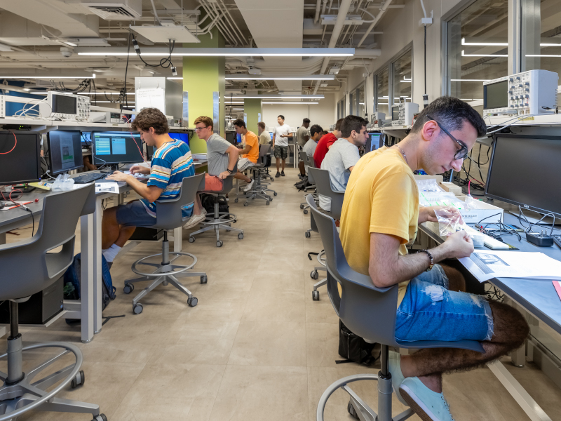

My Vision After Completing the Program
After completing the program, I see myself stepping confidently into the tech world as a computer engineer or software developer. My goal is to build systems and applications that truly solve real-world problems, making everyday tasks easier and more efficient for people. I’m driven by the idea that technology should not just exist, but improve lives in practical, meaningful ways. Looking ahead, I aim to graduate with a strong foundation in computer science, but I also want much more than technical skills. I want the confidence to tackle challenges, the creativity to come up with innovative solutions, and the teamwork skills to collaborate effectively with others. These qualities are just as important as programming knowledge in shaping a successful career. Ultimately, my vision is to keep learning and growing, applying what I know in both technology and life. Whether it’s coding a new app, analyzing data, or solving unexpected problems, I want to make a tangible impact and continue evolving as a professional, a learner, and a person.
Return to Blog Page: